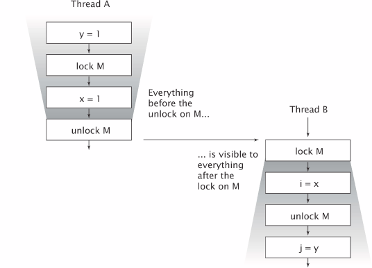

并发程序
“编写正确的程序很难，而编写正确的并发程序则难上加难。”这句话是《Java并发编程实践》里的第一句话。我很喜欢。
线程是Java语言的重要功能。它将复杂的异步代码变的更容易。
并发的好处
- 资源利用率, 在IO等待时去做其他的任务来提高资源利用率。
- 公平。时间片，让不同的用户和程序公平的使用计算资源，而不是一个程序从头跑到尾。
- 便利性。在同时完成多个任务时，编写多线程能相比于写一个单一线程的程序要简单。
线程带来的问题
- 安全性。 不正确的结果。
- 活跃性。死锁与饥饿，活锁
- 性能。响应不及时，频繁的上下文切换开销
多线程的应用广泛
- JVM本身就是多线程的，主线程main，后台线程垃圾回收，终结操作等。
- Servlet， RMI
- Swing，AWT
线程的安全性
线程安全性的定义。核心就是正确性。
- 核心是正确性
- 线程安全类
原子性
读取 修改 写入的序列。依赖于之前的状态。
- Race condition
- 延迟初始化的例子
1
2
3
4
5
6
7
8
9
10
11// Don't do this
public class LazyInitRace {
private ExpensiveObject instance = null;
public ExpensiveObject getInstance() {
if( instance == null)
instance = new ExpensiveObject();
return instance;
}
} - 复合操作/原子类
加锁机制
在单个原子操作中更新所有相关变量 - 内置锁(Intrisic Lock)。Synchronized
- 重入。获取锁的操作粒度是线程而不是调用
- 用锁来保护状态
活跃性与性能
- 同步块的代码大小分割。分得过细，可能带来开销问题。
- 分的过大 锁持有时间长。活跃性不好。
对象的共享
编写正确的并发程序，关键在于访问共享的可变状态时，要进行正确的管理。Synchronized关键字除了实现原子性，还有内存可见性。
可见性
没有同步的情况下 编译器 处理器 运行时 都可能重排序。
- 失效数据
- 非原子的64位操作
- 加锁与可见性

加锁的含义不仅仅局限于护持行为，还包括内存可见性。 - volatile变量
volatile变量对可见性的影响比volatile变量本身更为重要。
发布、逸出（Escape）
发布是指对象能在当前作用于之外的代码中访问使用。
1
2
3
4
5
6
7// Don't do this
class UnsafeStates {
private String[] states = new String[] {
"AK", "AL", ...
};
public String[] getStates() { return states; }
}
如果按照上边的代码发布states，就会出现问题，因为任何调用者都可以修改这个数组的内容。
- 定义。某个不该发布的对象被发布。
- 对象逸出后必须假定外部会误用该对象。
- 封装能够简化程序的正确性分析。
- this隐式逸出，引用一个未构造完的对象。
1
2
3
4
5
6
7
8
9
10
11
12// Don't do this
public class ThisEscape {
public ThisEscape(EventSource source) {
source.registerLisenter(
new EventListener() {
public void onEvent(Event e) {
doSomething(e); // source may use 'this' before constructor finished.
}
}
)
}
} - 用私有构造函数+工厂方法来避免逸出。
1
2
3
4
5
6
7
8
9
10
11
12
13
14
15
16
17public class SafeListender {
private final EventListener listerner;
private SafeListener() {
listener = new EventListener() {
public void onEvent(Event e) {
doSomething(e);
}
}
};
public static SafeListener newInstance(EventSource source) {
SafeListener safe = new SafeListener();
source.registerListener(safe.listener);
return safe;
}
}
线程封闭
- adhoc线程封闭。维护线程的封闭性完全由程序去实现。非常脆弱。
- 栈封闭。有点functional的感觉 线程之间独立。
- ThreadLocal类。为每个使用该变量的线程都存储一个独立的副本。
不变性（Immutable）
不变性的条件
- 对象创建后其状态就不能修改
- 对象所有的域都是final类型
- 对象是正确创建的。this没有在构造期间逸出
- final域
- 用volatile类型来发布不可变对象
安全发布，针对可变对象
- 不正确的发布，会使正确的对象被破坏。如果上边的Holder类没有被正确发布，那么另一个线程调用assertSanity就可能会抛出AssertionError。问题不在Holder本身，而在于Holder没有被正确的发布。如果n是final类型，那么没有问题。
1
2
3
4
5
6
7
8public class Holder {
private int n;
public Holder(int n){ this.n = n; }
public void assertSanity(){
if(n != n)
throw new AssertionError("This statement is false.");
}
}
Object的构造函数会在Holder构造函数运行前先将默认值写入n，也就是0.因此默认值可能被视为失效的。 - 任何线程都可以在不需要额外同步的情况下安全的访问不可变对象。
- 安全发布的常用模式。
（首先对象构造要正确，也就是this没有逸出。）
在静态出书画函数中初始化对象的引用
将对象引用保存到volatile类型的域
将对象引用保存到某个正确构造对象的final域
将对象引用保存到一个由锁保护的域中 - 事实不可变对象
- 可变对象 需要同步或者线程安全的方式来发布以及修改可变对象
- 安全的共享对象
对象组合
如何设计线程安全的类？如何判断一个类是否是线程安全的？
- 分析构成对象的状态的所有变量；分为基本类型和引用类型，被引用对象的域。例如LinkedList的状态就包括该链表中所有节点的对象的状态。
- 约束状态的不变条件；例如最大值最小值等独立限制。
- 可变状态的并发访问管理策略。也就是同步策略，对其状态的访问操作进行协同。
设计线程安全类的步骤
- 收集同步需求
final类型的域使用的越多，就能简化对象可能状态的分析过程。- 首先确保不可变条件不会破坏。例如一个计数器一定是正数。
- 后验条件。例如Counter的当前状态是17，那么下一个有效状态只能是18。
- 状态转换的约束，需要复合操作。只适用于下一个状态需要依赖当前状态的情况。
- 依赖状态的操作
- 某个操作中包含有基于状态的先验条件。例如删除元素前，队列必须是非空。
- 简单的方法是使用现有的类库，例如阻塞队列，信号量等。
- 状态的所有权
- 所有权和封装性相关联。对象封装他拥有的状态，即对他封装的状态有所有权。封装的好，则分析起来简单。
- 如果发布了某个可变状态的引用，则不再拥有独占的控制权。
- 容器类通常表现出所有权分离的形式。
实例封闭
针对非线程安全的对象，要使用别的招数来让它安全。
- 当一个对象被封装在一个类里，那么能够访问这个对象的所有代码都是已知的。更易于分析。
1
2
3
4
5
6
7
8
9
10
11
12
13
public class PersonSet {
("this")
private final Set<Person> mySet = new HashSet<Person>();
public synchronized void addPerson(Person p){
mySet.add(p);
}
public synchronized boolean containsPerson(Person p) {
return mySet.contains(p);
}
} - 实例封闭是构建线程安全类的一个最简单方式。
- Java类库中线程封闭实例。Collections.synchronizedList。
线程安全性的委托
大多数对象都是组合对象。如果类中的各个组件都已经是线程安全的，是否需要再额外的加一个线程安全层要视情况而定。
不可变类一定时线程安全的。
CopyOnWriteArrayList是一个线程安全的链表。
在现有的线程安全类中添加功能
通过继承扩展方法比直接将代码添加到类中更脆弱，因为现在的同步策略实现被分不到多个单独维护的源代码文件中。
客户端加锁
组合
将同步策略文档化
客户以及维护人员可以了解线程安全方面的策略。
基础构建模块
同步容器类
同步容器类的问题
同步容器类包括Vector和Hashtable… 这些类实现线程安全的方法是将它的状态封装起来，并且对public方法同步，所以每次都只有一个线程能访问。
问题在于复合操作，包括迭代，跳转，条件计算（如putIfAbsent）。我们在自定义符合操作时，要知道要在哪个对象上加锁。
迭代器与ConcurrentModificationException
要想避免出现ConcurrentModificationException，就必须在迭代过程持有容器的锁
隐藏迭代器
例子：隐式调用集合类Set的toString方法会出发调用迭代器
并发容器
通过并发容器来代替同步容器，可以极大地提高伸缩性并降低风险。
ConcurrentHashMap
粒度更细的加锁机制，称为分段锁（Lock Striping）。可以在并发环境下实现更高的吞吐量。
ConcurrentHashMap返回的迭代器如有弱一致性，意思就是容忍并发的修改。size返回的结果是一个估计值。
size与isEmpty的弱一致性换得了其他更重要操作的性能。
额外的原子Map操作
1 | public interface ConcurrentHashMap<K, V> extends Map<K, V> { |
CopyOnWriteArrayList
每次修改时都会创建并重新发布一个新的容器的副本。
仅当迭代操作远远多于修改操作时，才应该使用CopyOnWrite容器。适用于事件通知系统，因为多数情况下，注册和撤销注册listener的操作要远远少于接受事件通知的操作。
阻塞队列和生产者-消费者模式
生产者消费者·模式能简化开发过程，因为它消除了生产者和消费者类之间的代码依赖性。
BlockingQueue简化了生产者消费者设计的实现过程，它支持任意数量的生产者消费者。一种常见的例子就是线程池和工作队列的组合，Executor任务执行框架中就体现了这种模式。阻塞特点，让编码更为简单。
在构建高可靠的应用程序时，有界队列是一种强大的资源管理工具，他们能抑制并防止产生过多的工作项，使应用程序在负荷过载的情况下更加健壮。
BlockingQueue的实现包括LinkedBlockingQueue, ArrayBlockingQueue, PriorityBlockingQueue.
SynchronousQueue是一个特殊的实现，实际上它不是一个真正的队列，因为它不会为队列中的元素维护空间。它维护一组线程，这些线程在等待着把元素加入或移除队列。由于是线程直接交付数据，put和take会一直阻塞。
阻塞方法与中断方法
阻塞方法的执行线程在被阻塞后，必须等待某个不受他控制的事件发生后才能继续执行。
BlockingQueue的put和take方法会抛出Checked Exception，InterruptedException，这与类库中其他的一些方法做法相同，例如Thread.sleep。当某个方法抛出InterruptedException时，表示该方法是一个阻塞方法，如果这个方法被中断，那么他将努力提前结束阻塞状态。
当一个方法调用了阻塞方法时，他本身也变成了阻塞方法，并且必须要处理中断响应。一般有两种处理方式，一是传递，二是恢复中断。
同步工具类
闭锁
CountDownLatch